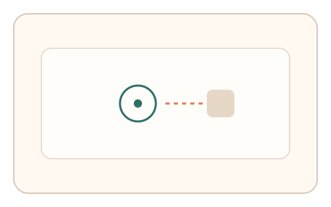
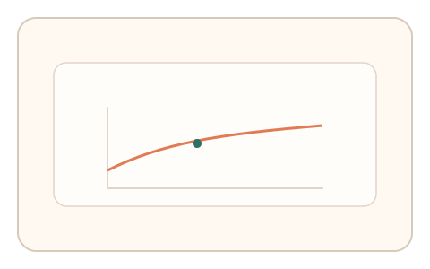
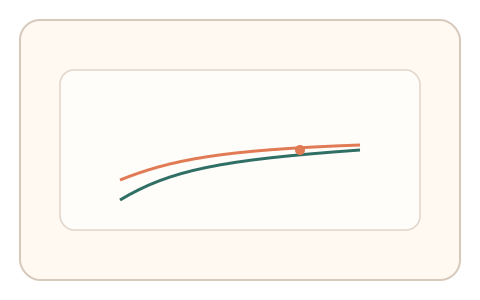

#151
Reverse Brainstorming - Round 1
已扩展
动态暗变量
在任务中引入不可感知的动态参数，以真实适应曲线作为判定依据。
概念原文
在任务过程中引入用户不可感知的动态参数（如随机摩擦/延迟/刺激节奏），判定基于对这些暗变量的真实适应曲线。
正确答案不可推导，必须呈现真实适应过程。
研究背景
人类在动态参数变化下会展现适应曲线与误差修正，而脚本难以准确同步隐含变量。利用暗变量可放大真实适应特征。
核心机制
- 在交互中引入动态摩擦/延迟等暗变量。
- 记录误差与修正过程。
- 提取适应曲线斜率与稳定时间。
- 与人类基线分布比对。
用户流程
- 步骤 1：用户开始交互任务。
- 步骤 2：暗变量动态变化并引发误差。
- 步骤 3：系统分析适应曲线判定。
判定信号
误差下降斜率
真实适应表现为渐进收敛。
调整时延与回拉
适应过程存在可测的延迟。
判定逻辑
适应曲线需符合人类范围；无适应或瞬时收敛判异常。
对抗面
- 控制器预测暗变量并模拟
- 回放历史适应曲线
防御与缓解
- 随机化暗变量变化模式
- 多阶段切换提高拟合成本
- 与其他信号联合判定
可达性与风险
提供低强度模式与退出选项，避免不适。
- 高延迟设备影响适应曲线
- 参数过强导致失败率上升
可视化状态

状态 1：暗变量介入
任务中隐含参数动态变化。

状态 2：适应过程
用户逐步修正误差。

状态 3：曲线判定
评估适应曲线与稳定时间。
参考资料
Motor adaptation
说明人在动力学变化下的适应。
Internal model (motor control)
说明内部模型与误差修正。